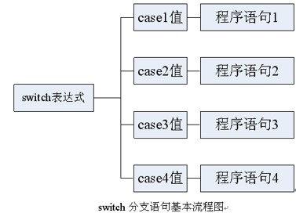
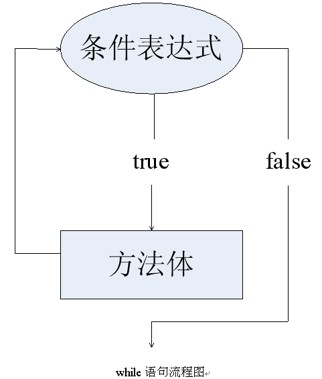
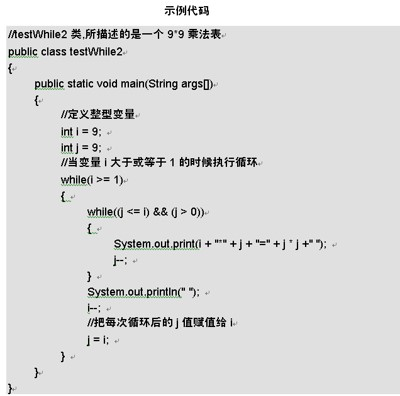
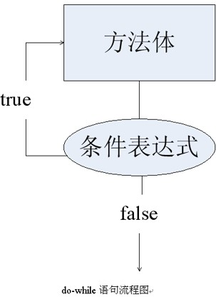
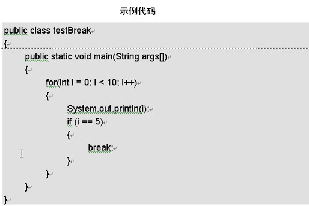
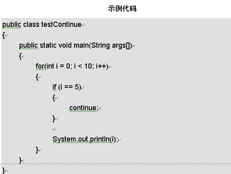

在日常生活中，每个人早上起床后，通常要做洗脸、刷牙等事；如果有好看的电视节目，也会打开电视机进行收看；每一个人都有自己的安排。在Java中，洗脸、刷牙等事就好像代码程序，这些事是由流程控制语句来控制的。在流程控制语句中有一个叫做if的语句，它的作用就是根据条件来执行程序，就好像根据是否有好看的电话节目来决定一样。在Java里控制流程语句主要有条件语句、分支语句、循环语句。下面分别来介绍。通过本章的学习，同学们应该能够完成下面的几点目标。
- 了解if条件语句和掌握各种if条件语句的使用。
- 了解switch分支语句和掌握switch分支语句的使用。
- 了解while循环语句和掌握while循环语句的使用。
- 了解do-while循环语句和掌握do-while循环语句的使用。
- 了解for循环语句和掌握for循环语句的使用。
4.1 if 条件语句
if这个单词的中文意思就是如果，在前面已经提到，如果有好看的电视节目时，就会打开电视进行收看。在Java中if条件语句就是实现这个功能，如果if条件中的条件语句是正确(true)的，就会执行if语句中的程序语句。
4.1.1 if语句的语法
if语句的基本语法为：
if(表达式){方法体}else if(表达式){方法体}else{方法体}
下面用代码来演示。
if (a > 3)
{
//条件为真的方法体
}
else
{
//条件为假的方法体
}
if语句的执行条件是，当表达式为true时，执行方法体的部分；如果表达式不为false，执行else if的部分或else部分的方法体。
4.1.2 if语句用法举例
if语句的用法有好几种，下面列举if语句的几种形式。
- 简写形式：if ...
- 一般形式：if ... else
- 完整形式：if ... else if ... else
if语句的简写形式
if (n >= 0)
{
...
}
if语句的一般形式
if (i != 0)
{
...
}
else
{
...
}
if语句的完整形式
if (a > 5)
{
...
}
else if (a != 0)
{
...
}
else
{
...
}
还有一种情况，当执行的方法体只有一行代码的时候，我们可以省略花括号，如：
if (i == 0)
i++;
else
i = 0;
4.2 switch分支语句
switch语句和if相似的，它是根据条件表达式的值来判断执行的程序语句。在日常生活中也经常有这样的情况，例如根据星期几来判断是否上课，如果等于星期一到星期五中的一天就上课，如果等于星期六或者星期日就不上课。switch分支语句要比if语句复杂的多。但当判断的条件很多时，switch分支语句要比if语句要方便很多。
4.2.1 switch语句的语法
switch分支语句和if语句一样都是通过表达式的成立与否，来选择执行哪条语句的。先来看一下switch语句的组成部分。
switch的语法：
switch (表达式)
{
case 表达式1:
{
表达式的结果与表达式1相匹配时，所执行的方法体。
break;
}
case 表达式2:
{
表达式的结果与表达式2相匹配时，所执行的方法体。
break;
}
case 表达式3:
{
表达式的结果与表达式3相匹配时，所执行的方法体。
break;
}
...
default:
表达式的结果与上述表达式的结果都不匹配时，所执行的方法体。
}
4.2.2 switch分支语句表达式的使用条件
switch分支语句的表达式的使用有一定的条件，不是什么类型都能使用的。一般能使用的条件是具体的整型数值和一些有顺序的数列。下面对整型数值进行讲解，其他类型用法相同。在Java中整数类型包括：byte、char、short、int型。
int a = 3;
switch (a)
{
case 1:
{
System.out.println("第一个");
break;
}
case 2:
{
System.out.println("第二个");
break;
}
case 3:
{
System.out.println("第三个");
break;
}
}
结果：第三个
4.3 while 循环语句
所谓while循环语句，就是先进行判断再进行循环。通过判断表达式，来决定具体的循环次数。下面先介绍下while循环语句的语法并举例说明。
4.3.1 while语句的语法
通过判断表达式的成功与否，来决定循环的次数。先介绍基本语法：
while(表达式)
{
//方法体
}

4.3.2 while循环语句举例
在上一节中介绍了while循环语句的具体语法后，下面用一个详细例子进行说明，在下面的程序中，来讲解如何显示乘法表。
4.4 do...while循环语句
所谓do...while循环语句，就是先进行循环，再来进行表达式的判断，如果表达式不成立就退出循环。下面介绍do...while循环语句的语法。
do
{
//方法体
}
while(表达式);
do ... while循环语句的流程图如图所示。
4.5 for循环语句
所谓for循环语句，就是明确了循环的次数，进行次数循环的。下面先介绍下for循环语句的语法并举例说明
for(变量初始化; 表达式; 递增表达式)
{
//方法体
}
用for循环来实现其他循环语句
【范例】修改上一节的9*9乘法表代码。

4.6 如何中断和继续语句的执行
在学校中，有时间会发生临时放假的情况，可能会临时放假一天，也可能会一直放假。在Java循环语句中中也有这种情况，可以使用break语句和continue语句来中断程序，就好比中断上课一样。不同的是break语句是一直放假，而continue语句是放假一天。语句的中断和继续就是指在语句的执行过程中，用代码中断语句的执行并退出此代码块。继续和中断类似，中断和继续在Java里用break和continue关键字来表示。
4.6.1 break：中断语句执行
break关键字在前面学习的switch分支语句中已经使用过了，下面直接用代码进行说明。
下面是使用break来中断for循环的程序。
4.6.2 continue：继续语句执行
continue语句表示跳出本循环，继续执行下一次循环，同样还是采用程序来讲解continue语句的知识。
4.7 综合练习
1.编写一个求从1到100数中所有的奇数和的程序。【提示】使用for循环，将循环条件改为i+=2。
public class LianXi1
{
public static void main(String args[])
{
int t=0;
//执行for循环，使循环间隔为2，从而之进行奇数操作
for(int i=1;i<=100;i+=2)
{
t+=i; //每次循环时，为表示总和的变量加上本次循环的变量值
}
System.out.println("从1到100的奇数为："+t);
}
}
2.使用for循环实现打印九九乘法表
看什么看，这次没有代码
4.8 小结
通过本章的学习，可以让同学们了解Java是如何控制程序的执行和中断，学好这些知识可以为以后编写代码打下基础。其中对流程语句的讲解同学们还可以参考电子工业出版社《Java优化编程（第2版）》一书来进行更详细的学习。本章的重点是for循环语句和if语句的使用。在下一章中将学习数组的创建和操作。